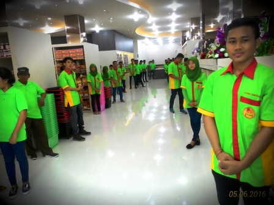

ANEKA SARI RASA adalah pusat produk oleh-oleh khas Lampung terbesar dan terlengkap di provinsi Lampung yang menyediakan ribuan produk oleh-oleh karya masyarakat Lampung, antara lain keripik pisang, lempok durian, manisan buah, kemplang, kopi, dan berbagai produk lainnya. ANEKA SARI RASA didirikan oleh Wilson Limas (anak pertama dari ibu Thung Siu Phin / Isabella) yang terletak di tengah kota, yaitu di seberang Wihara Thai Hin Bio, kecamatan Teluk Betung Selatan, kota Bandar Lampung.
ANEKA SARI RASA menyediakan produk-produk dengan kualitas terbaik dan didukung dengan area belanja yang nyaman serta para pelayan yang sangat ramah menyambut para pelanggan. Produk oleh-oleh khas Lampung yang hanya tersedia di ANEKA SARI RASA dan sangat dikenal di seluruh Indonesia antara lain adalah : Keripik Pisang Kepok ANEKA, Keripik Pisang Kembang ANEKA, Lempok Durian ASR, Keripik Jamur ANEKA, dan Kemplang AHAO.
Sebagai pusat produk oleh-oleh khas Lampung terbesar dan terlengkap di provinsi Lampung, ANEKA SARI RASA telah dikunjungi oleh turis-turis lokal dan turis-turis mancanegara. ANEKA SARI RASA siap melayani pelanggan sejak pukul 07.30 sampai 22.00 selama 7 hari dalam seminggu.